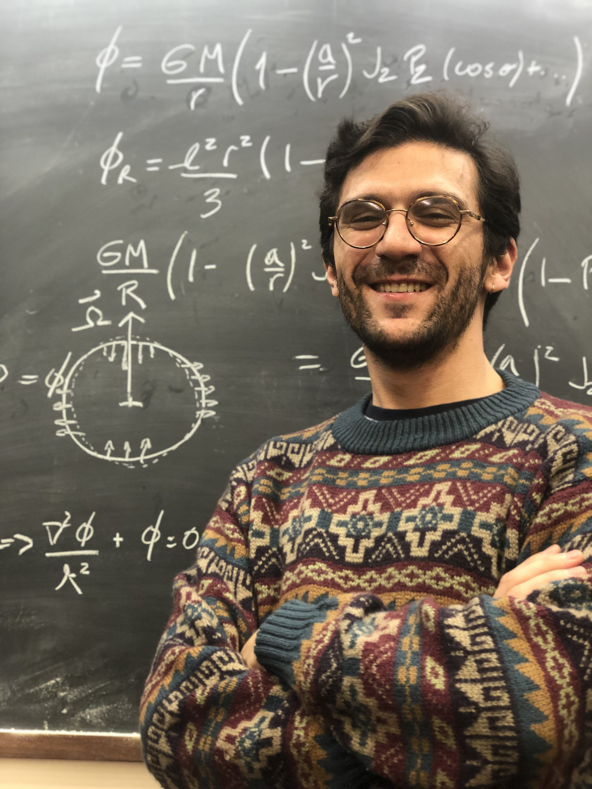
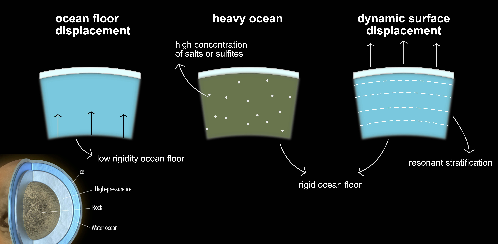
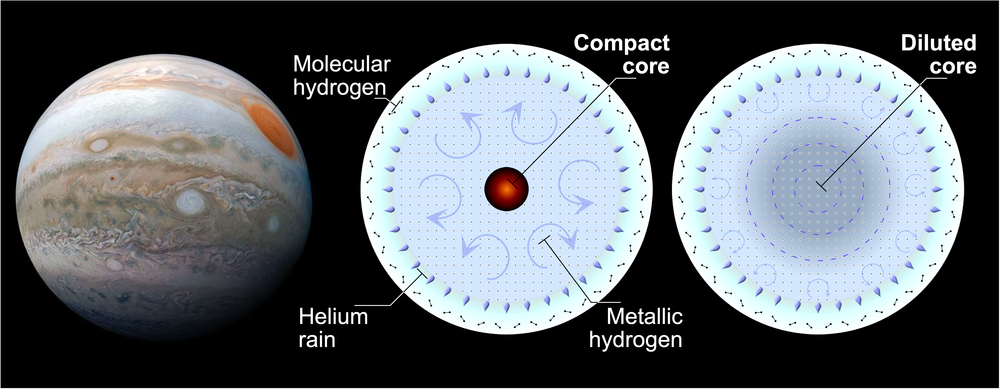
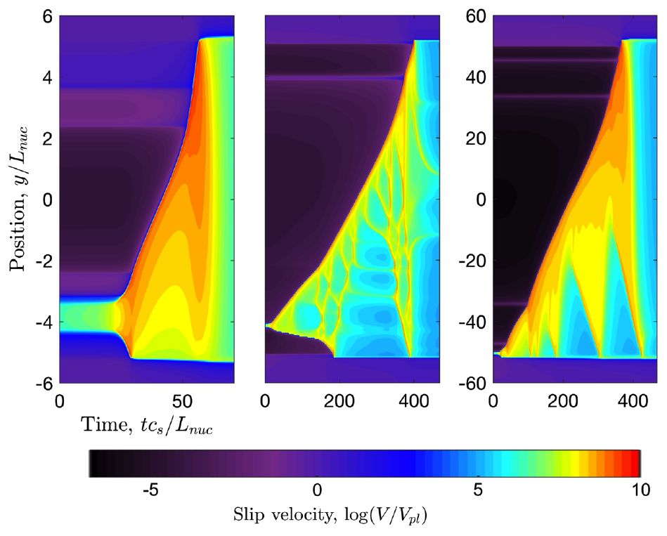
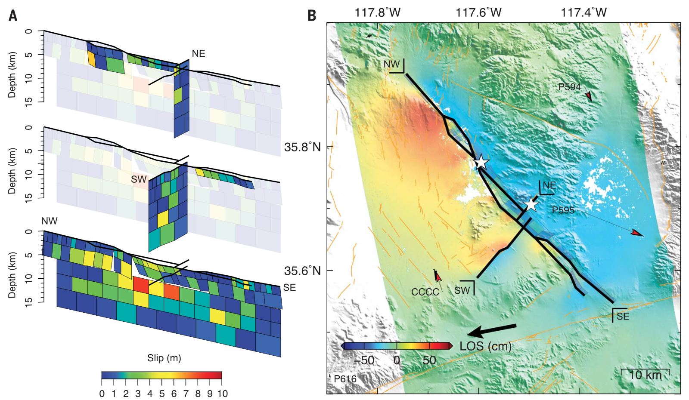

Office: ISB111, Interdisciplinary Sciences Building
Welcome to my website

I am a Planetary Scientist currently appointed as a Vera Rubin Postdoctoral Fellow in the Astronomy and Astrophysics Department at UC Santa Cruz. My research interests spand the multi-scale physics of planetary processes in various bodies across the Solar System and beyond, most recently earthquakes on Earth, the ocean dynamics of icy satellites, and the dynamic interiors and formation of giant planets. Most of my work involves building models to translate spacecraft measurements into scientific stories. I also work at constructing physics-based scenarios of how exotic environments in other worlds are maintained, generating predictions that future NASA/ESA interplanetary missions can test and evaluate. I dream with a future where we understand how planets initially form and later evolve and how those processes relate to the origin and survival of life.
I developed my first connection to space as a kid by looking at the clear nightskies of Chiloe Island and the Chilean Patagonia. I initiated my academic path in engineering at the University of Chile, and turned into science trying to understand the large M8.8 Chile earthquake that struck my country of origin in 2010. I received my doctorate degree in Planetary Science from Caltech in 2022, the institution that opened my path into space exploration. I am currently a member of the science teams of NASA missions Juno and Europa Clipper. I am also a science communicator in both English and my native Spanish.
The Cassini mission's measurement of Titan's tidal Love number k₂ = 0.616 ± 0.067 (Durante et al., 2019) presented a puzzle: the observed value sits three standard deviations above predictions for a pure water ocean overlain by an elastic ice shell. While a highly viscous ocean floor or elevated bulk ocean density could potentially explain the discrepancy, these scenarios require extreme conditions—either unrealistically low ice viscosity or salt concentrations exceeding those of Earth's oceans.
This work developed an alternative interpretation invoking resonant excitation of internal gravity waves in a stably stratified ocean (Idini and Nimmo, 2024). When Titan's ocean contains vertical salinity gradients—with denser, saltier water at depth—it supports internal gravity waves (g-modes) that can be resonantly driven by eccentricity tides if their natural frequencies align with Titan's orbital period. The analysis shows that even modest stratification (mean salinity below 5 g/kg, comparable to Earth's oceans) can produce k₂ enhancements of 15–45%, sufficient to reconcile the Cassini observation without requiring extreme ocean properties. The resonance manifests as tens of meters of additional surface displacement riding atop the equilibrium tide, while deep in the ocean interior, horizontal fluid velocities reach several meters per second—large enough to be dynamically significant yet below the threshold for nonlinear wave breaking.
The mechanism requires explaining how Titan established and maintains such a resonance. Two pathways emerge: secular cooling causes progressive ocean freezing, increasing the Brunt-Väisälä frequency until a g-mode crosses the tidal frequency; alternatively, outward orbital migration continuously sweeps Titan through potential resonances as the tidal forcing frequency drifts. In the freezing scenario, the resonance can become self-sustaining—tidal heating in the resonant ocean produces approximately 6 × 10¹¹ W, comparable to Titan's radiogenic heating, slowing further freezing and locking the system near the resonance. This framework extends beyond Titan: upcoming measurements of Europa's k₂ by Europa Clipper and Ganymede's multi-frequency tidal response by JUICE will test whether resonant stratification operates widely among ocean worlds, and whether tidal observations can probe the otherwise inaccessible density structure of subsurface oceans.

Interior models of Titan's global ocean (Idini and Nimmo, 2024). Lower-left corner inset is from de Kleer et al. (2019).
References:
Durante, D. et al. (2019). Titan's gravity field and interior structure after Cassini. Icarus, 326, 123-132. [Link]
de Kleer, K. et al. (2019). Tidal Heating: Lessons from Io and the Jovian System. Keck Institute for Space Studies Report. [PDF]
Idini, B. & Nimmo, F. (2024). Resonant stratification in Titan's global ocean. The Planetary Science Journal, 5(1), 15. [Link]
Tidal theory of the gas giant planets
Since 2016, the Juno spacecraft has been orbiting Jupiter and collecting a unique data set of Jupiter's tidal Love numbers, namely the tidal response of Jupiter to the masses of the Galilean satellites in orbit around Jupiter. In a pioneering work, this work further developed the theory of dynamical tides applied to gas giant planets (Idini and Stevenson, 2021), a body of knowledge that had not been touched since 1984 (Vorontsov et al., 1984). In this theoretical rebirth of Jovian dynamical tides, the analysis showed that the tidal Love number k₂ measured by Juno was compatible with a modification on the tidal flow produced by the Coriolis force in a rapidly rotating gas giant planet (Idini and Stevenson, 2021). Paired with the Juno observation, these theoretical results constitute the first detection of dynamical tides in a gas giant planet.
Additional Love numbers were reported by Juno after the arrival of the k₂ retrievals. The high-degree tides represented in k₄₂ are not only harder to observe, but are also harder to interpret. First-order perturbation theory was applied to develop a fully analytical theory to illuminate the interpretation of k₄₂ (Idini and Stevenson, 2022a). This theory shows how the oblate figure of Jupiter resulting from rapid rotation couples the tides to the rotational response, resulting in an order of magnitude enhancement in k₄₂ (Wahl et al., 2020, Idini and Stevenson, 2022a). The resulting k₄₂ enhancement gives rise to an anomaly after comparing models with the Juno k₄₂ observation.
Jupiter's South pole as revealed by Juno (NASA/JPL-Caltech/SwRI/MSSS).
References:
Vorontsov, S. et al. (1984). Dynamical tidal response of Jupiter and Saturn. Astronomicheskii Vestnik, 18, 8.
Idini, B. & Stevenson, D.J. (2021). Dynamical tides in Jupiter as revealed by Juno. The Planetary Science Journal, 2(2), 69. [Link]
Wahl, S.M. et al. (2020). Equilibrium shape and internal structure of Titan. The Astrophysical Journal, 891, 42.
Idini, B. & Stevenson, D.J. (2022a). The lost meaning of Jupiter's high-degree Love numbers. The Planetary Science Journal, 3(1), 11. [Link]
The tidal imprint of a dilute core hosted in Jupiter
In the traditional view of gas giant planet interiors, an envelope of H-He fluid covers a compact core of rocky and icy material. This traditional view nicely emerges from the standard model of planet formation via core accretion. However, even to this day, no geophysical evidence exists to validate the traditional view.
The zonal gravitational field (i.e., non-tidal) observed by Juno suggests that Jupiter hosts a dilute core that may extend as far as ~0.6R_J (Militzer et al., 2022). A less extended dilute core could also explain the data when using a different equation of state for the H-He fluid (Miguel et al., 2022). Avoiding the uncertainties related to the equation of state, this work used Jovian dynamical tides and normal modes to show that internal gravity waves trapped in an extended dilute core (~0.7R_J) reconcile the anomaly in Juno's k₄₂ observation (Idini and Stevenson, 2022b). This scenario invokes a resonance between Jupiter's internal gravity waves and the orbital motion of the satellite Io. The resonance mechanism provides independent constraints on Jupiter's interior structure that complement gravity measurements of the static gravitational field, establishing tidal observations as a probe of compositional stratification in planetary interiors.

What kind of core does Jupiter have? (Idini 2022)
References:
Militzer, B. et al. (2022). Juno spacecraft measurements of Jupiter's gravity imply a dilute core. The Planetary Science Journal, 3, 185.
Miguel, Y. et al. (2022). Jupiter's inhomogeneous envelope. Astronomy & Astrophysics, 662, A18.
Idini, B. & Stevenson, D.J. (2022b). The gravitational imprint of an interior-orbital resonance in Jupiter-Io. The Planetary Science Journal, 3(4), 89. [Link]
Theoretical and computational earthquake mechanics
The nucleation, propagation, and arrest of earthquakes remains a fundamental unsolved problem in geophysics, with observational complexity often exceeding what simple models predict. Seismological and geodetic observations reveal highly damaged rock surrounding active fault zones—low-velocity zones with reduced elastic moduli—yet most rupture models treat faults as embedded in homogeneous elastic media.
This work extended a spectral boundary integral earthquake simulator (Luo et al., 2017) to incorporate fault zone damage, enabling quasi-dynamic simulations of multi-cycle earthquake sequences in elastically heterogeneous media. The damaged zones alter stress transfer in ways that cannot be captured by homogeneous models: they preferentially promote short-wavelength stress heterogeneity and modify the spatial distribution of slip during rupture. These simulations revealed a quasi-static mechanism for generating earthquake pulses—a common rupture mode in large destructive events where slip at any point on the fault is brief despite extended total rupture duration. The mechanism operates through modified stress transfer kernels in damaged zones, independent of the dynamic wave effects previously thought necessary for pulse generation (Idini and Ampuero, 2020).
Subsequent fully-dynamic earthquake cycle simulations confirmed these findings and revealed additional complexity (Flores-Cuba et al., 2024). The quasi-static pulse mechanism persists when seismic wave propagation is rigorously accounted for, though dynamic interactions between rupture fronts and fault zone trapped waves introduce slip rate oscillations at characteristic frequencies. Damage zones amplify high-frequency seismic radiation and produce multiple peaks in source time functions—features often attributed to fault segmentation or frictional heterogeneity, but which emerge here from purely elastic heterogeneity in a geometrically simple fault. These results establish damaged fault zones as a fundamental control on rupture complexity, with observable signatures in both near-field ground motion and far-field seismic radiation.

Spatiotemporal evolution of slip velocity in the characteristic event of an intact homogeneous medium, a low-velocity fault zone, and an intact homogeneous medium with ten times smaller nucleation length.
References:
Luo, Y. et al. (2017). QDYN: A Quasi-DYNamic earthquake simulator (v1.1). Zenodo. [Software]
Idini, B. & Ampuero, J.-P. (2020). Fault-zone damage promotes pulse-like rupture and back-propagating fronts via quasi-static effects. Geophysical Research Letters, 47(23), e2020GL090736. [Link]
Flores-Cuba, J. et al. (2024). Mechanisms and seismological signatures of rupture complexity induced by fault damage zones in fully-dynamic earthquake cycle models. Geophysical Research Letters, 51(11), e2024GL108792. [Link]
Earthquake ground-motion characterization
Seismic hazard assessment in subduction zones requires ground motion prediction equations calibrated to local tectonic and geological conditions, yet existing models often fail to capture regional variations in high-frequency attenuation. Using strong-motion records from the Chilean seismic network, this work developed empirical attenuation relationships that distinguish between interplate and intraplate earthquake sources—a distinction critical for forecasting shaking intensity in a region where both rupture styles produce destructive events. The statistical framework accounts for path effects, site conditions, and source depth, revealing systematic differences in spectral decay that previous models had overlooked.
The resulting ground motion prediction equations (Idini et al., 2017) are now routinely applied in seismic hazard studies throughout Chile, informing building codes and infrastructure design in one of the world's most seismically active regions.
Subsequent analysis of the spectral decay parameter κ revealed an unexpected complexity in the attenuation structure (Idini et al., 2024). Earthquakes located near the subduction trench exhibit κ values that increase ten times faster with distance than earthquakes at depth or downdip along the plate boundary—despite similar path lengths to coastal recording stations. This double distance dependence cannot be explained by variations in seismic velocity alone and instead points to strong lateral heterogeneity in the quality factor Q. The interpretation invokes the eroded and fractured continental wedge near the trench, where seismic energy dissipates far more rapidly than in the intact continental basement traversed by deeper events. This finding has direct implications for seismic hazard: coastal cities above the downdip portion of the megathrust experience ground motions with approximately three times higher spectral amplitude at 8 Hz compared to what current prediction equations anticipate, exposing low-rise structures to underestimated high-frequency shaking.
Valdivia residents explore a crack caused by the 1960 Chile earthquake (STF/AFP/Getty).
References:
Idini, B. et al. (2017). Ground motion prediction equations for the Chilean subduction zone. Bulletin of Earthquake Engineering, 15, 1853-1880. [Link]
Idini, B. et al. (2024). Double distance dependence in high-frequency ground motion along the plate boundary in Northern Chile. Journal of South American Earth Sciences, 133, 104699. [Link]
Spaceborne reconstruction of earthquake sources
The 2019 Ridgecrest earthquake sequence ended two decades of seismic quiescence in California with a geometrically complex rupture involving hierarchical orthogonal faulting. I reconstructed the coseismic slip distribution using satellite radar interferometry and GPS observations, implementing a fully probabilistic Bayesian framework with parallel MCMC sampling. The challenge was not merely solving the inverse problem, but doing so in a way that rigorously quantified uncertainties across a high-dimensional fault geometry—something conventional deterministic methods cannot achieve.
The model was completed within two months of data acquisition and published in Science (Ross et al., 2019), becoming the primary reference for characterizing this event. It demonstrated that sophisticated probabilistic inference at scale need not sacrifice operational relevance, a tension that pervades problems where sparse observations must constrain complex physical processes. The work ranks among the top 0.1% of cited geoscience publications from 2019.

(A) Bayesian coseismic slip reconstruction of the 2019 Ridgecrest earthquake. (B) Line-of-sight coseismic ground displacement obtained from the ALOS-2 spacecraft.
References:
Ross, Z., Idini, B. et al. (2019). Hierarchical interlocked orthogonal faulting in the 2019 Ridgecrest earthquake sequence. Science, 366(6463), 346-351. [Link]
Publications
(12) Idini, B. & Nimmo F. (2024). Resonant stratification in Titan's global ocean. The Planetary Science Journal. [PDF]
(11) Idini, B., Ruiz, S., Ampuero., J-P., Rivera, E, & Leyton, F. (2024). Double distance dependence in high--frequency ground motion along the plate boundary in Northern Chile. Journal of South American Earth Sciences, 133. [PDF]
(10) Idini, B. & Stevenson D.J. (2022). The gravitational imprint of an interior-orbital resonance in Jupiter-Io, The Planetary Science Journal.
[PDF]
(7) Erickson, B., Jiang, J., et al., including Idini, B. (2020). The community code verification exercise for simulating sequences of earthquakes and aseismic slip (SEAS), Seismological Research Letters.
(5) Ross, Z., Idini, B., Jia, Z., et al. (2019). Hierarchical interlocked orthogonal faulting in the 2019 Ridgecrest earthquake sequence, Science.
[Supplementary Material] [Software] [Press]
(4) Gurnis, M., et al., including Idini, B. (2019). Incipient subduction at the contact with stretched continental crust: The Puysegur Trench, Earth and Planetary Science Letters
(3) Leyton, F., Pastén, C., Ruiz, S., Idini, B., & Rojas, F. (2018). Empirical site classification of CSN network using strong‐motion records. Seismological Research Letters.
(2) Luo, Y., Ampuero, J. P., Galvez, P., Van den Ende, M., & Idini, B. (2017). QDYN: a Quasi-DYNamic earthquake simulator (v1. 1). Zenodo.
[Software]
(1) Idini, B., Rojas, F., Ruiz, S., & Pastén C. (2017). Ground motion prediction equations for the Chilean subduction zone, Bulletin of Earthquake Engineering.
Numerical integration of linearized oscillation equations for gas giant planets with rotation and stratification.
Computing tidal Love numbers
October 2025
The tidal Love number \(k_\ell\) quantifies a planet's deformation response to external tidal forcing. For gas giants, this response couples to internal oscillations when forcing frequencies approach eigenmode frequencies.
The perturbed gravitational potential exterior to the planet:
where \(k_\ell\) encodes the induced multipole amplitude. For dynamical tides, resonant enhancement occurs when \(\omega \approx \omega_n\).
Numerical implementation
The core algorithm integrates coupled ODEs for radial displacement, potential perturbation, and pressure. Full implementation: github.com/yourusername/tide-solver.
def compute_love_number(model, ell, omega):
"""Compute k_ell at forcing frequency omega."""
sol = solve_ivp(
lambda r, y: oscillation_eqs(r, y, omega, ell, model),
[r[0], r[-1]], y0, rtol=1e-10
)
R = model['radius'][-1]
k_ell = (sol.y[3][-1] * R / sol.y[1][-1] + ell + 1) / (ell + 1)
return k_ell
For Jupiter, rotation-modified response yields \(k_{22} \approx 0.59\) at Io's forcing frequency, enhanced from static \(k_{22}^{\text{static}} \approx 0.379\) (Idini & Stevenson, 2021).
Geodetic observations constrain coseismic slip through elastic dislocation. Given surface displacements \(\mathbf{d}\), we seek the posterior over fault slip \(\mathbf{m}\):
def log_posterior(m, d, G, Cd_inv, alpha):
"""Log posterior for slip vector m."""
residual = d - G @ m
chi2 = residual.T @ Cd_inv @ residual
L = laplacian_matrix(fault_geometry)
roughness = m.T @ L.T @ L @ m
return -0.5 * (chi2 + alpha * roughness)
sampler = emcee.EnsembleSampler(nwalkers, ndim, log_posterior,
args=(data, greens, Cd_inv, alpha))
sampler.run_mcmc(pos, 50000)
Ridgecrest reconstruction (Ross et al., 2019) converged within 72 hours on 16 cores, revealing hierarchical fault activation.
Posterior mean slip distribution from InSAR and GPS inversion.
References
Ross, Z., Idini, B. et al. (2019). Hierarchical interlocked orthogonal faulting in the 2019 Ridgecrest earthquake sequence. Science, 366(6463), 346-351.
Titan's subsurface ocean supports internal gravity waves when salinity gradients produce stable stratification. The dispersion relation for linear waves in Boussinesq fluid:
$$\omega^2 = N^2 \frac{k_h^2}{k^2}$$
where \(N(z)\) is the Brunt-Väisälä frequency. Resonance occurs when \(\omega\) matches Titan's orbital frequency \(\omega_{\text{orb}} = 4.56 \times 10^{-6}\) rad/s.